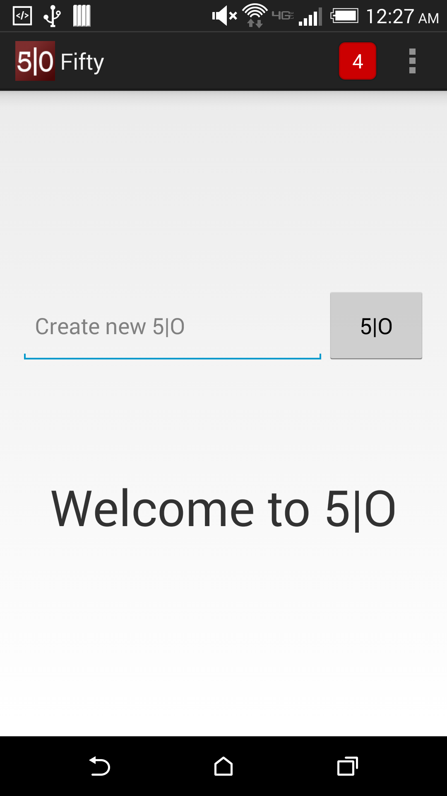
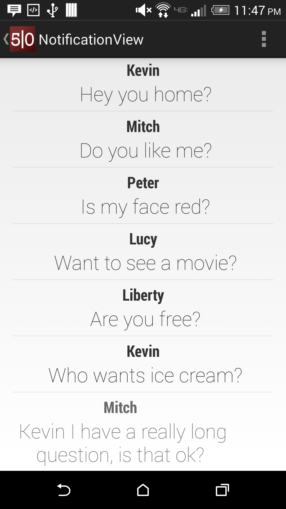

Design - v0.1
Design Requirements for Mobile
- Home screen - keep it simple
- Navigation - Way to navigate from home to notifications. Dream here, can be a swipe-slide like snapchat or a button that sends you to notification screen.
- Notification - Way to show notification count on home screen. Currently done with square and number. Keep it geometric, can be a custom notification icon with and a small circle pops up with a number in it like iPhone.
- Buddy List - How easiest way to select friends. All option to lead to friend list, but focus on groupings for ease.
- View Results - Need a way to view results with one of (yes | I | 1) on the right and (no | O | 0) on the left, looking natural.
Screenshots

